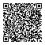

Bergedorf gemeinsam · Arbeitsmaterial
Projektwerkstatt gegen Einsamkeit
Ausfüllbare Arbeitsvorlagen, Prüflisten und ein Informationsblatt für eigenständig handelnde Initiativen, Einrichtungen und Organisationen im Bezirk Bergedorf.
Rollen klar halten: Diese Unterlagen unterstützen die eigene Konzeptarbeit. Bergedorf gemeinsam stellt Informationen bereit, organisiert aber keine Arbeitsgruppen, vermittelt keine Personen, begleitet keine Betroffenen und finanziert keine Projekte. Jede Initiative braucht selbst eine verantwortliche Trägerschaft, Koordination und geklärte Ressourcen. Es besteht keine Kooperation vor ausdrücklicher Zustimmung der genannten Stellen.
Stand: 27. November 2026. Die Vorlagen sind allgemeine Arbeitshilfen und keine Rechts-, Förder-, medizinische oder fachliche Einzelfallberatung. Vor einer Durchführung sind Zuständigkeiten, Datenverarbeitung, Schutz, Versicherung, Förderbedingungen und Genehmigungen für das konkrete Vorhaben zu prüfen.
1. Vorlage: Projektbeschreibung
Beschreiben Sie zunächst den Vorschlag und den belegten örtlichen Bedarf getrennt. Kennzeichnen Sie Vermutungen als offene Fragen.
2. Checkliste: Arbeitsgruppe gründen
Eine Idee ist erst dann eine Arbeitsgruppe, wenn Menschen sich selbst organisieren und eine Koordination festlegen. Es entsteht keine automatische Zuständigkeit des Webseitenbetreibers.
Gründungsentscheidung und Datum:
3. Vorlage: Aufgabenverteilung
Jede Aufgabe braucht eine zuständige Person, realistische Kapazität, Frist und einen Weg für Ausfall oder Übergabe.
| Aufgabe / Ergebnis | Verantwortlich | Mitwirkende | Kapazität / Frist | Status / Vertretung |
|---|---|---|---|---|
4. Vorlage: Zeit- und Meilensteinplan
Planen Sie Prüfschritte vor jeder Ausgabe und Durchführung ein. Ein Förderantrag ist kein Bewilligungsbescheid.
| Meilenstein / Ergebnis | Verantwortlich | Start | Prüftermin | Abhängigkeit / Beleg |
|---|---|---|---|---|
5. Muster: Sitzungsprotokoll
Projekt / Datum / Ort oder digitales Format / Teilnehmende mit Funktion:
Agenda und Sachstand:
Beschlüsse (Wortlaut, Zuständigkeit, Frist):
Offene Fragen / Risiken / nächste Prüfung:
Protokollfreigabe und Aufbewahrung/Löschung:
Keine sensiblen persönlichen Angaben oder Gesundheitsdaten in ein allgemeines Gruppenprotokoll aufnehmen.
6. Vorlage: Kostenplan
Unterscheiden Sie Schätzung, beantragte Mittel, Bewilligung und tatsächlichen Mittelabfluss. Prüfen Sie, ob Vorhabenbeginn vor Bewilligung unzulässig ist.
| Kostenart | Menge / Einheit | Einzelbetrag | Gesamt | Quelle / Status |
|---|---|---|---|---|
| Personal / Koordination | ||||
| Räume / Energie | ||||
| Fahrtkosten / Zugänglichkeit | ||||
| Material / Druck / Übersetzung | ||||
| Versicherung / Schulung / Fachberatung | ||||
| Evaluation / Verwaltung / Folgekosten |
Gesamtkosten, Eigenmittel, beantragte und bewilligte Beträge getrennt:
7. Checkliste: Personalbedarf
Auch ehrenamtliche Zeit ist begrenzt. Benennen Sie verlässlich notwendige Aufgaben und Ausfallvertretung.
- Projektleitung und Koordination (Zeitumfang, Vertretung)
- Fachliche Beratung, Schulung und Supervision
- Gewinnung, Einführung und Begleitung Ehrenamtlicher
- Verwaltung, Terminplanung, Abrechnung und Datenschutz
- Barrierefreiheit, Übersetzung und Kinder-/Angehörigenbelange
- Kommunikation, Beschwerden, Notfälle und Schutz
- Evaluation und nachhaltige Finanzierung nach Projektende
Benötigte Gesamtstunden / Finanzierungsquelle / Abdeckung von Urlaub und Krankheit:
8. Vorlage: fachliche Qualifikationen
| Aufgabe | Erforderliche Erfahrung / Qualifikation | Wer weist sie nach? | Schulung / Auffrischung |
|---|---|---|---|
| Kontakt / Begleitung | |||
| Beratung / Weiterleitung | |||
| Schutz / Notfall / Beschwerde |
Aufgaben ohne passende Qualifikation dürfen nicht durch eine unklare Projektbeschreibung als Beratung oder Betreuung ausgegeben werden.
9. Checkliste und Musteranschreiben an mögliche Partner
Musteranschreiben
Betreff: Unverbindliche Anfrage zu einem möglichen Projekt gegen Einsamkeit in Bergedorf
Guten Tag,
wir prüfen derzeit die Projektidee [Titel]. Ziel ist [konkretes Ziel]. Für Bergedorf ist bislang belegt: [Befund und Quelle]; offen ist noch: [Frage].
Wir möchten unverbindlich klären, ob Ihr Angebot beziehungsweise Ihre Erfahrung für eine fachliche Rückmeldung oder einen möglichen nächsten Schritt relevant sein könnte. Derzeit besteht noch keine Arbeitsgruppe / Finanzierung / Umsetzung. Der voraussichtliche Aufwand wäre [Aufwand]. Eine Zusammenarbeit entsteht nur, wenn Sie ausdrücklich zustimmen und Zuständigkeiten gemeinsam geklärt werden.
Wären Sie zu einem kurzen fachlichen Austausch bereit? Eine Absage hat selbstverständlich keine weiteren Folgen.
Freundliche Grüße
[Name, Funktion, Kontakt der eigenständigen Initiative]
10. Vorlage: Fördermittelrecherche
Förderinformationen sind zeitabhängig. Prüfen Sie immer den aktuellen Aufruf, die Antragsberechtigung und den Zeitpunkt des Projektbeginns beim Fördergeber. Derzeit wird auf dieser Website keine Förderung für die 18 Ideen behauptet.
| Prüffeld | Eigene Notiz |
|---|---|
| Programm / Fördergeber / Originalquelle | |
| Förderzweck und Bezug zum Projekt | |
| Antragsberechtigte / Trägerschaft | |
| Förderhöhe / Eigenmittel / förderfähige Kosten | |
| Frist / Projektlaufzeit / Vorhabenbeginn | |
| Personal- und Verwendungsnachweis | |
| Datum der Prüfung / zuständige Rückfrage |
Offizielle Rechercheeinstiege:
- Hamburg: Freiwilliges Engagement in Bergedorf („Geld für Gutes“)
- Hamburg: Förderrichtlinie Freiwilliges Engagement
- Hamburg: Informationen für Organisationen und Engagement Dock
- Bund: Förderdatenbank (Suche nach aktuellem Status und Antragsberechtigung)
- Bergedorf-Bille-Stiftung / Bündnis gegen Einsamkeit Hamburg
Zum Prüfstand am 27. November 2026
- Die Bezirksseite Bergedorf beschreibt „Geld für Gutes“ bis maximal 1.000 Euro pro Antrag. Der dort verlinkte Antragsvordruck trägt den Jahrgang 2025; freie Mittel und ein aktueller Antragszeitraum für 2026 sind damit nicht bestätigt.
- Die veröffentlichte Hamburger Richtlinie für freiwilliges Engagement in den Bezirken nennt Anträge bis 5.000 Euro für Einzelpersonen, Initiativen und Vereine und ist laut Sozialbehörde bis 31. Dezember 2026 gültig. Eine Bewilligung oder Fortsetzung nach diesem Datum folgt daraus nicht.
- Die hamburgweite Richtlinie nennt 5.000 bis 25.000 Euro jährlich. Die Antragsphase für 2027 ist laut Sozialbehörde beendet; weitere Förderungen für 2027 sind nicht geplant. Ein Verfahren für 2028 wird voraussichtlich im Sommer 2027 starten.
- Die Bergedorf-Bille-Stiftung nennt für „Kuchen verbindet“ bis zu 150 Euro pro Veranstaltung und Anträge bis Ende 2026 nach dem Windhundprinzip. Ob noch Mittel verfügbar sind und ob ein konkretes Vorhaben die Bedingungen erfüllt, muss die Stiftung bestätigen.
Geprüft anhand der Originalseiten der Sozialbehörde Hamburg, des Bezirksamts Bergedorf und der Bergedorf-Bille-Stiftung am 27. November 2026. Diese Angaben sind keine Förderzusage oder individuelle Förderberatung.
11. Checkliste: Umsetzung vorbereiten
12. Vorlage: Erfolgskriterien
Vorab: Einmalige Reichweite, erneute Teilnahme, subjektive Zugehörigkeit und Einsamkeit sind unterschiedliche Größen. Berichten Sie sie getrennt. Das Ziel „90 Prozent langfristig regelmäßig, freiwillig und aus eigener Initiative“ ist ein politisch-programmatischer Zielmaßstab, kein belegter Ergebniswert.
Quantitative Zugänge
- Erreichte Menschen (Zählweise erklären)
- Erstkontakte und begleitete Erstbesuche
- Wiederkehrende und selbstständige Besuche
- Beteiligte Organisationen und geschulte Ehrenamtliche
- Gestartete Projekte und wohnortnahe Angebote
Qualitative Erfahrungen
- Wahrgenommene Willkommenskultur
- Abbau von Hemmschwellen
- Empfinden von Zugehörigkeit
- Neue und dauerhafte soziale Beziehungen
- Freiwillige Selbstständigkeit und gegenseitige Unterstützung
Indikator / Ausgangspunkt / Ziel / Methode / Verantwortlich / Rhythmus / Grenzen:
13. Prüfliste: Datenschutz und Schutz
Diese Checkliste ersetzt keine konkrete Datenschutz- oder Schutzkonzeptprüfung.
14. Checkliste: Willkommenskultur in Begegnungsstätten
Beobachteter Stand, Belege, Verbesserungsbedarf und nächster Prüftermin:
15. Entwurf: freiwillige Selbstverpflichtung
Diese Erklärung ist ein Arbeitsentwurf. Sie wird erst durch ausdrückliche Annahme einer Einrichtung zu deren eigener Erklärung. Die Plattform bestätigt keine Erfüllung.
- Wir heißen neue Besucher respektvoll willkommen und benennen eine Ansprechperson.
- Wir ermöglichen freiwillige Teilnahme ohne erzwungene persönliche Offenlegung.
- Wir kommunizieren Kosten, Zeiten, Zugangsbedingungen und bekannte Barrieren zutreffend.
- Wir gehen respektvoll mit unterschiedlichen Lebenslagen, Identitäten und Fähigkeiten um.
- Wir erklären, an wen sich Menschen bei Beschwerden oder akutem Unterstützungsbedarf wenden können.
- Wir prüfen regelmäßig, ob unsere Information aktuell ist und ob neue Besucher Zugang finden.
- Wir stellen eigene Grenzen und fehlende Kapazitäten offen dar.
- Wir verwenden Erfahrungsberichte und Fotos nur mit gesonderter, freiwilliger Zustimmung.
Einrichtung / verantwortliche Stelle / Geltungsbereich:
Kontakt / Datum / Überprüfungstermin:
Unterschrift einer vertretungsberechtigten Person:
16. Freiwillige Rückmeldung nach 4, 8 und 12 Wochen
Eine spätere Projektträgerschaft kann diese Vorlage freiwillig verwenden. Bergedorf gemeinsam erhebt derzeit keine persönlichen Rückmeldungen. Teilnahme oder Nichtteilnahme an der Rückmeldung darf keine Nachteile haben.
Nach 4 Wochen
War der Einstieg verständlich? Wurden Sie willkommen geheißen? Was würde den nächsten Besuch erleichtern?
Nach 8 Wochen
Haben Sie das Angebot freiwillig wieder besucht? Fühlen Sie sich zugehöriger? Was sollte verändert werden?
Nach 12 Wochen
Nehmen Sie inzwischen selbstständig teil? Sind neue Kontakte entstanden, die Sie weiter pflegen möchten? Welche Hürden bleiben?
Keine Namen, Diagnosen oder identifizierenden Details aufbewahren, sofern dafür kein geklärter Zweck und keine geeignete Rechtsgrundlage bestehen. Aggregierte Auswertung ist nicht automatisch anonym, wenn Gruppen sehr klein sind.
17. Informationsblatt für Sowieso-da-Orte
Bergedorf gemeinsam
Gemeinsam statt einsam – Bergedorf
Sie suchen Kontakte, gemeinsame Aktivitäten oder Unterstützung?
Auf Bergedorf gemeinsam finden Sie Informationen über Begegnungsmöglichkeiten, Beratungsstellen und Hilfsangebote im Bezirk.
Scannen Sie den QR-Code oder öffnen Sie:
markbergedorf.github.io/bergedorf-gemeinsam
Menü: Einsamkeit in Bergedorf → Hilfe, Beratung und Unterstützung

Der Auslageort ist keine Beratungsstelle, sofern er das nicht ausdrücklich selbst anbietet. Das Informationsblatt stammt von der unabhängigen Bürgerplattform Bergedorf gemeinsam. Bei Lebensgefahr: 112.
18. Informationsblatt für Angehörige und Nachbarn
Ein Mensch, um den Sie sich sorgen, braucht nicht automatisch eine Diagnose oder eine ungefragte Problemlösung. Ein respektvoller, konkreter Kontakt kann ein Anfang sein.
- Fragen Sie ruhig und ohne Druck, ob ein Gespräch gerade willkommen ist.
- Hören Sie zu; drängen Sie nicht zu Erklärungen oder persönlichen Offenbarungen.
- Bieten Sie eine konkrete, freiwillige Einladung an, etwa einen kurzen Spaziergang oder eine gemeinsame Aktivität.
- Fragen Sie, ob Informationen zu Beratungs- oder Begegnungsangeboten hilfreich wären.
- Respektieren Sie eine Absage und fragen Sie, ob ein späterer Kontakt erwünscht ist.
- Bei akuter Lebensgefahr: 112. Die Website ist kein Krisendienst.
Geprüfte Hilfszugänge in Bergedorf ansehen. Anbieter, Kosten, Aufnahme und Kapazität bitte im jeweiligen Originalkontakt prüfen.
Kein Besuch, keine Weitergabe persönlicher Angaben und keine Kontaktvermittlung ohne ausdrückliche Zustimmung der betroffenen Person.
19. Informationsblatt für Arbeitgeber und Beschäftigte
Soziale Verbundenheit im Arbeitsalltag lässt sich unterstützen, ohne Beschäftigte zur Offenlegung privater Erfahrungen zu verpflichten.
- Freiwillige Begleitperson für neue Mitarbeitende anbieten.
- Gemeinsame Pausen und freiwillige Aktivitäten während der Arbeitszeit ermöglichen.
- Schicht- und Homeoffice-Teams mit verlässlichen, inklusiven Kontaktwegen verbinden.
- Vertrauliche externe Beratung benennen; Vorgesetzte sollen keine persönlichen Diagnosen oder Einsamkeitserfahrungen abfragen.
- Teilnahme darf keine Voraussetzung für Beurteilung, Einsatzplanung oder Entwicklung sein.
- Beschäftigte können Vorschläge anonym oder direkt über geeignete betriebliche Mitbestimmung einbringen.
Es ist kein Bergedorfer Arbeitgeberprojekt bestätigt. Vor Umsetzung sind Personalvertretung, Datenschutz, Arbeitszeit, Zugänglichkeit und fachliche Zuständigkeit zu prüfen.
20. Informationsblatt für Begegnungsstätten, Vereine und Einrichtungen
Neue Besucherinnen und Besucher profitieren von klaren Informationen und einer zugewandten Begrüßung. Diese Hinweise sind ein Selbstcheck, keine Auszeichnung.
- Wer ist für den ersten Kontakt ansprechbar?
- Kann eine Person zunächst unverbindlich teilnehmen?
- Sind Kosten, Zeiten, Anmeldung, Raumzugang und Rückweg beschrieben?
- Ist eine persönliche Vorstellung freiwillig?
- Wie kann jemand ohne Rechtfertigung wieder gehen oder später erneut teilnehmen?
- Welche fachliche Stelle hilft bei Fragen, die außerhalb der Einrichtung liegen?
Zur Projektidee Begegnungsstätten der Zukunft. Nur bestätigte Einrichtungen dürfen eigene Angebote und Eigenschaften zusagen.
21. Informationsblatt für freiwillig Engagierte
Engagement soll freiwillig, überschaubar und passend zu den eigenen Möglichkeiten sein. Eine einmalige Aufgabe ist ebenso wertvoll wie regelmäßiges Engagement.
- Einmalig: einzelne Veranstaltung oder kurze praktische Aufgabe.
- Gelegentlich: Unterstützung nach Absprache, ohne festen Wochenrhythmus.
- Regelmäßig: wiederkehrende Aufgabe mit klarer Ansprechperson und Vertretung.
- Längerfristig: Verantwortung mit Einführung, Schutz, Versicherung und vereinbartem Zeitumfang.
Für aktuelle Möglichkeiten und eine persönliche Orientierung wenden Sie sich direkt an die Freiwilligenagentur Hamburg-Bergedorf. Bergedorf gemeinsam vermittelt keine Einsatzplätze.
22. Informationsblatt für Arztpraxen und Apotheken
Dieses Blatt dient ausschließlich der Weitergabe neutraler Informationen. Es ist keine Diagnose, Therapieempfehlung oder Beratungsleistung der Praxis beziehungsweise Apotheke.
Wenn ein Mensch selbst nach Begegnungs- oder Unterstützungsangeboten fragt, können Sie auf den unabhängigen Bergedorfer Hilfswegweiser hinweisen. Die Entscheidung über Kontaktaufnahme und Datenweitergabe bleibt bei der Person.
Hilfswegweiser Bergedorf öffnen · Datenschutzhinweise der Plattform
Es besteht keine Kooperation mit einzelnen Praxen oder Apotheken, sofern diese nicht ausdrücklich bestätigt und kenntlich gemacht wurde.
23. Stadtteilbezogene Hilfsübersicht
Die Website erschließt Informationen für alle 14 amtlichen Stadtteile. Die Karten- und Themenansicht ist eine redaktionelle Übersicht, keine vollständige Versorgungserhebung. Die Bevölkerungszahlen und örtlichen Beschreibungen werden mit den dort genannten Quellen und offenen Grenzen dargestellt.
24. Kompakte Informationskarte
Kontakte, Begegnungen oder Unterstützung gesucht?
Der Bergedorfer Hilfswegweiser zeigt ausgewählte Beratungs- und Begegnungsangebote mit direkten Originalkontakten.
QR-Code und Hilfswegweiser auf der Vorderseite öffnen
Keine Beratungsstelle. Bei Lebensgefahr: 112. Ohne Anmeldung und ohne Eingabe persönlicher Angaben nutzbar.
Praxisbeispiele aus Bielefeld: Originalquellen
Diese Beispiele illustrieren unterschiedliche kommunale und trägergetragene Ansätze. Eine Übertragung setzt eine eigene Bergedorfer Trägerschaft, Koordination, Finanzierung und Prüfung voraus.
- Koordinierungsstelle Begegnung und Zusammenhalt – Stadt und AWO; ESF-gefördertes Lots*innenprogramm. Die dortigen hauptamtlichen Ressourcen sind nicht Teil dieses Websiteprojekts.
- Weniger allein in Bielefeld – kommunale Informationsstruktur.
- BielefeldKompass – Angebotsübersicht; laut Anbieter nicht vollständig.
- Kostenlose Kurzschulungen gegen Einsamkeit – für Gruppen und Teams im Bielefelder Projektkontext.
- Einsteigen. Ausreden. – zeitlich und betrieblich abgestimmtes Begegnungsformat im ÖPNV.
- Auftakt und angekündigte begleitete Fahrten ab Januar 2027 – Betreiber- und Personalbedingungen gelten für Bielefeld.
- Projekt Dazwischen – persönliche Stimmen; keine repräsentative Erhebung.
- Hilfe finden in Bielefeld – Beratung, Begegnung und Freizeit.
Die am 22. Juni 2026 angekündigte Einzelaktion ist vergangen. Die Stadt kündigt außerdem ab Januar 2027 begleitete Fahrten und markierte Sitzreihen in acht Stadtbahnwagen an; dies sind Bielefelder Planungen und keine Bergedorfer Termine oder Zusagen.